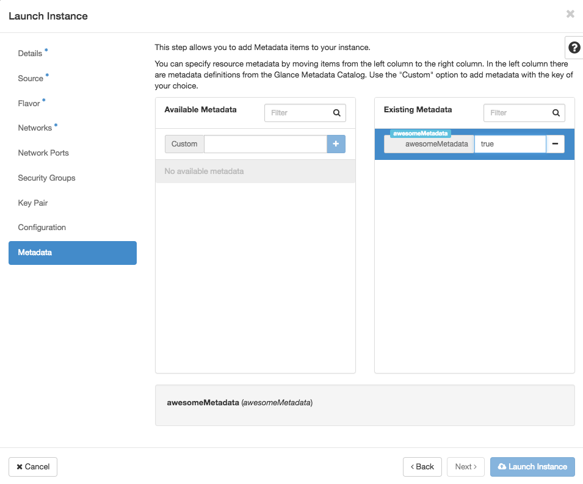

How to use OpenStack instance metadata
Overview
In your UKCloud for OpenStack environment, it's useful to be able to track instances and take programmatic actions based on metadata. For example, you might want to list the instances associated with a particular project team in your organisation to extract billing information. Or maybe you want to access metadata during the deployment of a cluster to know which nodes are masters or slaves.
This article shows you how to add metadata to an instance and how to retrieve instance metadata.
Using the API
Creating an instance with metadata (API)
When you create a new instance using the OpenStack API, use the property flag to include metadata:
-- property <key>=<value
For exmaple:
openstack server create --nic net-id=internet --image cirros --flavor t1.tiny --property awesomeMetadata=true testVM
Setting metadata on an existing instance (API)
You can also use the property flag to set metadata for an existing instance, for example:
openstack server set --property coolMetadata=true testVM
Retrieving instance metadata (API)
You can retrieve instance metadata by querying the show command, for example:
openstack server show testVM
The output returned by the command includes any metadata in the properties section, for example:

Using Horizon
Creating an instance with metadata (Horizon)
When you create an instance using Horizon, you can include metadata on the Metadata tab of the Launch Instance dialog box.

Setting metadata on an existing instance (Horizon)
To add metadata to an existing instance in Horizon, select Update Metadata from the Actions menu on the Instances page.

Using HEAT templates
Heat supports metadata tagging. For more information, see:
Using configuration management tools
You can also use configuration management tools, such as Ansible, to set instance attributes. For more information, see:
http://docs.ansible.com/ansible/os_server_module.html
Feedback
If you have any comments on this document or any other aspect of your UKCloud experience, send them to products@ukcloud.com.